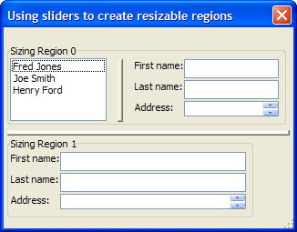
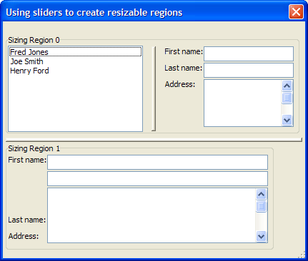

Stretchable Windows with Resizable Regions
This script demonstrates how to use the {STRETCH}, {STICKTO}, {HSLIDER}, and {VSLIDER} commands to create a dialog and regions within it that stretch both horizontally and vertically.
 Note : The sequence of commands in this script is slightly different from the example in Learning Xdialog in order to make them easier to understand.
Note : The sequence of commands in this script is slightly different from the example in Learning Xdialog in order to make them easier to understand.
First, the script defines some data to display and sets the dialog title.
names = <<%dlg% Fred Jones Joe Smith Henry Ford %dlg% dim dlg_title as C dlg_title = "Using sliders to create resizable regions" |
The script then defines a region that will be the top portion of the dialog box. This region will stretch to width and height, and stay left aligned.
 Note : The default behavior for alignment is for objects to stay left and top aligned. as a result, the {stickto} command is not actually needed in this example.
Note : The default behavior for alignment is for objects to stay left and top aligned. as a result, the {stickto} command is not actually needed in this example.
ui_modeless_dlg_box(dlg_title,<<%dlg% {stretch=width,height}{stickto=left} {region} {lf}; {frame=1,1Sizing Region 0} [.20,5name^#names] {sp} |
The {hslider} command divides the top portion of the dialog box. After it comes another region that will stretch to width and height, and stay left aligned.
{hslider} {sp} {stretch=width,height} {region} {stickto=left} First name:|{stretch=width}[.20fname]{stickto=left}; Last name:|{stretch=width}[.20lname]{stickto=left}; Address:|{stretch=width,height}[%M%.20,1address]{stickto=top,left}; |
Both the regions on the top portion of the dialog end.
{endregion}; {endregion}; |
The script adds a vertical slider that will stretch to width and height.
{stretch=width,height} {vslider}; |
Next is a region that will occupy the bottom portion of the dialog box. It includes a frame.
{stretch=width,height} {region} {frame=1,1Sizing Region 1} |
Inside the frame is a another region that contains controls. This second region is necessary to keep the frame separate from its contents. Note how the First name and Last name controls will stretch horizontally, and the Address control will stretch both horizontally and vertically.
{region} {stickto=left,top} First name:|{stretch=width}[.40fname]; Last name:|{stretch=width}[.40lname]; Address:|{stretch=width,height}[%M%.40,1address]; |
Finally, the regions are ended and the script ends.
{endregion}; {endregion}; %dlg%) |

The dialog as it appears when first opened.

The dialog after stretching the window boundaries and moving the horizontal and vertical sliders.
Next
Limitations
Desktop applications only
See Also
{STRETCH}, {STICKTO}, {HSLIDER}, {VSLIDER}, Miscellaneous Examples